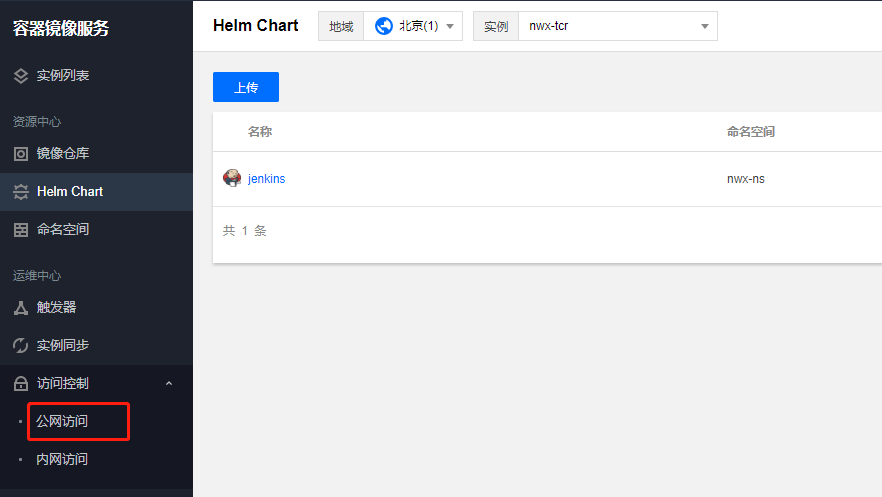
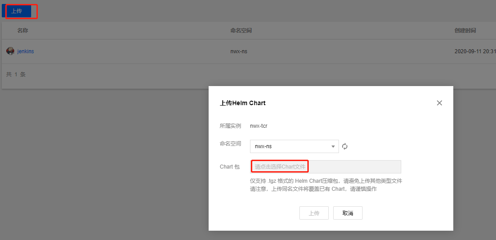
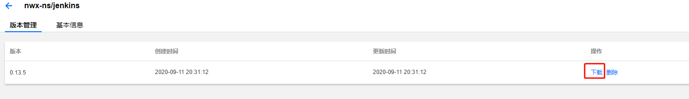
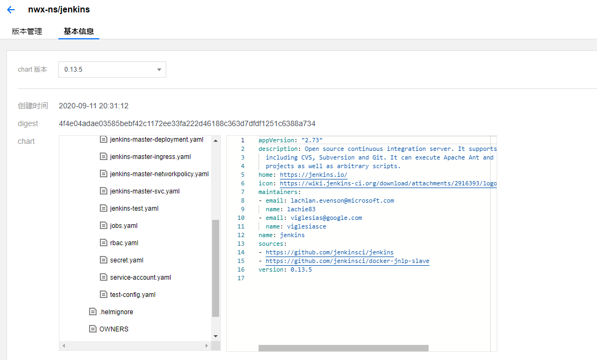

本篇文章主要介绍了如何通过helm部署应用到k8s集群中
Helm的介绍
Helm就相当于kubernetes环境下的yum包管理工具。
用途
做为 Kubernetes 的一个包管理工具，Helm具有如下功能：
- 创建新的 chart
- chart 打包成 tgz 格式
- 上传 chart 到 chart 仓库或从仓库中下载 chart
- 在Kubernetes集群中安装或卸载 chart
- 管理用Helm安装的 chart 的发布周期
重要概念
Helm 有三个重要概念：
- chart：包含了创建Kubernetes的一个应用实例的必要信息
- config：包含了应用发布配置信息
- release：是一个 chart 及其配置的一个运行实例
Helm组件
Helm 有以下两个组成部分：
Helm Client 是用户命令行工具，其主要负责如下：
- 本地 chart 开发
- 仓库管理
- 与 Tiller sever 交互
- 发送预安装的 chart
- 查询 release 信息
- 要求升级或卸载已存在的 release
Tiller Server主要负责如
是一个部署在Kubernetes集群内部的 server，其与 Helm client、Kubernetes API server 进行交互
- 监听来自 Helm client 的请求
- 通过 chart 及其配置构建一次发布
- 安装 chart 到Kubernetes集群，并跟踪随后的发布
- 通过与Kubernetes交互升级或卸载 chart
- 简单的说，client 管理 charts，而 server 管理发布 release
Helm的安装部署
下载客户端安装包安装
1 | wget https://get.helm.sh/helm-v2.14.3-linux-amd64.tar.gz |
通过脚本下载安装
1 | $ curl https://raw.githubusercontent.com/helm/helm/master/scripts/get > get_helm.sh |
helm 服务端安装Tiller。默认会部署swift和tiller这2个pod在kube-system命名空间下
1 | [root@VM-6-17-centos helm-data]# helm init |
安装正常后可以通过查看helm版本来检查客户端和服务端是否安装正常
1 | [root@VM-6-17-centos helm-data]# helm version |
另外一个值得注意的问题是RBAC，我们的 kubernetes 集群是1.8.x版本的，默认开启了RBAC访问控制，所以我们需要为Tiller创建一个ServiceAccount，让他拥有执行的权限，详细内容可以查看 Helm 文档中的Role-based Access Control创建rbac.yaml
1 | apiVersion: v1 |
然后使用kubectl创建：
1 | $ kubectl create -f rbac-config.yaml |
创建了tiller的 ServceAccount 后还没完，因为我们的 Tiller 之前已经就部署成功了，而且是没有指定 ServiceAccount 的，所以我们需要给 Tiller 打上一个 ServiceAccount 的补丁
1 | $ kubectl patch deploy --namespace kube-system tiller-deploy -p '{"spec":{"template":{"spec":{"serviceAccount":"tiller"}}}}' |
至此, Helm客户端和服务端都配置完成了，接下来我们看看如何使用吧。
安装遇到的问题
- 由于 Helm 默认会去gcr.io拉取镜像，所以如果你当前执行的机器没有配置科学上网的话可以实现下面的命令代替：
1 | helm init -i registry.cn-hangzhou.aliyuncs.com/google_containers/tiller:v2.14.3 --stable-repo-url http://mirror.azure.cn/kubernetes/charts/ --service-account tiller --override spec.selector.matchLabels.'name'='tiller',spec.selector.matchLabels.'app'='helm' --output yaml | sed 's@apiVersion: extensions/v1beta1@apiVersion: apps/v1@' | kubectl apply -f - |
- 我在安装过程中遇到了一些其他问题，比如初始化的时候出现了如下错误：
1 | E0125 14:03:19.093131 56246 portforward.go:331] an error occurred forwarding 55943 -> 44134: error forwarding port 44134 to pod d01941068c9dfea1c9e46127578994d1cf8bc34c971ff109dc6faa4c05043a6e, uid : unable to do port forwarding: socat not found. |
解决方案：在节点上安装socat可以解决
1 | $ sudo yum install -y socat |
helm的使用
仓库
1 | [root@master hello-helm] |
我们可以在本地启动一个 Repository Server，并将其加入到 Helm Repo 列表中。Helm Repository 必须以 Web 服务的方式提供，这里我们就使用 helm serve 命令启动一个 Repository Server，该 Server 缺省使用 $HOME/.helm/repository/local 目录作为 Chart 存储，并在 8879 端口上提供服务。
1 | $ helm serve & |
默认情况下该服务只监听 127.0.0.1，如果你要绑定到其它网络接口，可使用以下命令：
1 | $ helm serve --address 192.168.100.211:8879 & |
如果你想使用指定目录来做为 Helm Repository 的存储目录，可以加上 —repo-path 参数：
1 | $ helm serve --address 192.168.100.211:8879 --repo-path /data/helm/repository/ --url http://192.168.100.211:8879/charts/ |
通过 helm repo index 命令将 Chart 的 Metadata 记录更新在 index.yaml 文件中:
1 | # 更新 Helm Repository 的索引文件 |
完成启动本地 Helm Repository Server 后，就可以将本地 Repository 加入 Helm 的 Repo 列表。
1 | $ helm repo add local http://127.0.0.1:8879 |
查找chart
1 | helm search |
如果没有使用过滤条件，helm search 显示所有可用的 charts
1 | helm search mysql |
使用 inspect 命令可以查看到该 chart 里面所有描述信息，包括运行方式、配置信息等等。
安装chart
1 | helm install stable/mysql |
安装 chart 会创建一个新 release 对象。上面的 release 被命名为 torrid-gnat
1 | helm install stable/mysql --name mydb |
如果你想使用你自己的 release 名称，只需使用—name参数指定即可
1 | helm status mydb |
要跟踪 release 状态或重新读取配置信息，可以使用 helm status 查看
自定义chart
1 | helm inspect values stable/mysql |
要查看 chart 上可配置的选项，使用helm inspect values命令即可，比如我们这里查看上面的 mysql 的配置选项：
然后，我们可以直接在 YAML 格式的文件中来覆盖上面的任何配置，在安装的时候直接使用该配置文件即可：(config.yaml)
1 | mysqlUser: haimaxyUser |
我们这里通过 config.yaml 文件定义了 mysqlUser 和 mysqlDatabase，并且把 service 的类型更改为了 NodePort，然后现在我们来安装的时候直接指定该 yaml 文件：
1 | $ helm install -f config.yaml stable/mysql --name mydb |
可以看到当前 release 的名字已经变成 mydb 了。然后可以查看下 mydb 关联的 Service 是否变成 NodePort 类型的了：
1 | $ kubectl get svc |
看到服务 mydb-mysql 变成了 NodePort 类型的，二之前默认创建的 mewing-squid-mysql 是 ClusterIP 类型的，证明上面我们通过 YAML 文件来覆盖 values 是成功的。
接下来我们查看下 Pod 的状况：
1 | $ kubectl get pods |
比较奇怪的是之前默认创建的和现在的 mydb 的 release 创建的 Pod 都是 Pending 状态，直接使用 describe 命令查看下：
1 | $ kubectl describe pod mydb-mysql-dfc999888-hbw5d |
我们可以发现两个 Pod 处于 Pending 状态的原因都是 PVC 没有被绑定上，所以这里我们可以通过 storageclass 或者手动创建一个合适的 PV 对象来解决这个问题。
另外为了说明 helm 更新的用法，我们这里来直接禁用掉数据持久化，可以在上面的config.yaml 文件中设置：
1 | persistence: |
另外一种方法就是在安装过程中使用—set来覆盖对应的 value 值，比如禁用数据持久化，我们这里可以这样来覆盖：
1 | $ helm install stable/mysql --set persistence.enabled=false --name mydb |
升级chart
我们这里将数据持久化禁用掉来对上面的 mydb 进行升级：
1 | $ echo config.yaml |
可以看到已经变成 DEPLOYED 状态了，现在我们再去看看 Pod 的状态呢：
1 | $ kubectl get pods |
我们可以看到现在没有任何关于 PVC 的错误信息了，这是因为我们刚刚更新的版本中就是禁用掉了的数据持久化的，证明 helm upgrade 和 –values 是生效了的。现在我们使用 helm ls 命令查看先当前的 release：
1 | $ helm ls |
可以看到 mydb 这个 release 的REVISION已经变成2了，这是因为 release 的版本是递增的，每次安装、升级或者回滚，版本号都会加1，第一个版本号始终为1，同样我们可以使用 helm history 命令查看 release 的历史版本：
1 | $ helm history mydb |
当然如果我们要回滚到某一个版本的话，使用 helm rollback 命令即可，比如我们将 mydb 回滚到上一个版本：
1 | $ helm rollback mydb 1 |
删除chart
我们就学习了要删除一个 release 直接使用 helm delete 命令就 OK：
1 | $ helm delete mewing-squid |
这将从集群中删除该 release，但是这并不代表就完全删除了，我们还可以通过—deleted参数来显示被删除掉 release:
1 | $ helm list --deleted |
helm list —all则会显示所有的 release，包括已经被删除的
由于 Helm 保留已删除 release 的记录，因此不能重新使用 release 名称。（如果 确实 需要重新使用此 release 名称，则可以使用此 –replace 参数，但它只会重用现有 release 并替换其资源。）这点是不是和 docker container 的管理比较类似
请注意，因为 release 以这种方式保存，所以可以回滚已删除的资源并重新激活它。
如果要彻底删除 release，则需要加上—purge参数：
1 | $ helm delete mewing-squid --purge |
helm的打包和上传下载
打包发布到本地repo
1 | [root@VM-6-17-centos ~]# helm package jenkins --debug |
打包发布到远程repo
1 | [root@VM-6-17-centos ~]# helm plugin install https://github.com/chartmuseum/helm-push |
下载chart包
1 | helm fetch nwx-tcr-nwx-ns/jenkins --version 0.13.5 |
有的时候我们需要填写第三方的chart包，该如何填写呢？我们拿es的官方库来举例说明
登录这个网站https://helm.elastic.co/，可以根据网站key去获取对用的chart包
helm包托管到到腾讯云的TCR上
首先在TCR上开通实例，并将实例开通外网访问，配置helm客户端所在机器的ip到外网访问白名单

可以手动将chart包上传到仓库上

这边也可以用命令将包上传
1 |
从TCR上下载helm包，直接浏览器下载到本地

用命令下载到liunx机器上
1 | helm fetch nwx-tcr-nwx-ns/jenkins --version 0.13.5 |
查看chart包的yaml文件信息

Helm3更新和部署
移除了Tiller
在Helm 2的开发周期中，我们引入了Tiller。Tiller在团队协作中共享集群时扮演了重要角色。 它使得不同的操作员与相同的版本进行交互称为了可能。
Kubernetes 1.6默认使用了基于角色的访问控制（RBAC），在生产环境对Tiller的锁定使用变得难于管理。 由于大量可能的安全策略，我们的立场是提供一个自由的默认配置。这样可以允许新手用户可以乐于尝试Helm 和Kubernetes而不需要深挖安全控制。 不幸的是这种自由的配置会授予用户他们不该有的权限。DevOps和SRE 在安装多用户集群时不得不去学习额外的操作步骤。
在听取了社区成员在特定场景使用Helm之后，我们发现Tiller的版本管理系统不需要依赖于集群内部用户去维护 状态或者作为一个Helm版本信息的中心hub。取而代之的是，我们可以简单地从Kubernetes API server获取信息， 在Chart客户端处理并在Kubernetes中存储安装记录。
Tiller的首要目标可以在没有Tiller的情况下实现，因此针对于 Helm 3 我们做的首要决定之一就是完全移除Tiller。
随着Tiller的消失，Helm的安全模块从根本上被简化。Helm 3 现在支持所有Kubernetes流行的安全、 身份和授权特性。Helm的权限通过你的 kubeconfig文件进行评估。 集群管理员可以限制用户权限，只要他们觉得合适， 无论什么粒度都可以做到。版本发布记录和Helm的剩余保留功能仍然会被记录在集群中。
这边命令行操作只需按照客户端，按照步骤如下
1 | wget https://get.helm.sh/helm-v3.4.1-linux-amd64.tar.gz |
helm3回滚策略
你的团队正好在Kubernetes上使用Helm部署了生产环境应用。chart包含了一个部署对象使用了三套副本：
1 | $ helm install myapp ./myapp |
开发新人加入了团队。当他们第一点观察生产环境集群时，发生了一个像是咖啡洒在了键盘上一样的严重事故， 他们使用 kubectl scale 对生产环境部署进行缩容，将副本数从3降到了0 。
1 | $ kubectl scale --replicas=0 deployment/myapp |
团队里面的另一个人看到线上环境已经挂了就决定回滚这个版本到之前的状态：
1 | $ helm rollback myapp |
发布名称现在限制在namespace范围内
在Helm 3中，特定的版本信息作为发布本身存储在相同的命名空间中。 意味着用户现在可以在两个分开的命名空间中使用helm install wordpress stable/wordpress， 并且每个都能使用 helm list 改变当前命名空间。 (例如 helm list —namespace foo)。
与本地集群命名空间更好的一致性，使得 helm list 命令不再需要默认列出所有发布版本的列表。 取而代之的是，仅仅会在命名空间中列出当前kubernetes上下文的版本。 (也就是说运行kubectl config view —minify时会显示命名空间). 也就意味着您在执行helm list时必须提供 —all-namespaces 标识才能获得和Helm 2同样的结果。
使用Json格式验证Chart Values
chart values现在可以使用JSON结构了。这保证用户提供value可以按照chart维护人员设置的结构排列， 并且当用户提供了错误的chart value时会有更好错误提示。
当调用以下命令时会进行JSON格式验证：
1 | helm install |
安装时必须指定Name(或者—generate-name)
Helm 2中，如果没有提供名称， 会自动生成一个名称。在生产环境，这被证明是一个麻烦事而不是一个有用的特性。 而在Helm 3中，如果 helm install 没有提供name，会抛异常。
如果仍然需要一个自动生成的名称，您可以使用 —generate-name 创建。
命令行重命名
为了更好地从包管理器中调整不当措辞，helm delete被重命名为helm uninstall。helm delete 依然作为 helm uninstall 的别名保留，因此其他格式也能使用。
Helm 2 中为了清除版本清单，必须提供—purge参数。这个功能现在是默认使用的。 为保留之前的操作行为，要使用 helm uninstall —keep-history。
另外，其他一些重命名的命令提供了以下约定：
helm inspect -> helm show
helm fetch -> helm pull
这些命令都保留了老的动词作为别名，因此您能够使用任意一种格式。
命名空间不存在则报错
当用命名空间创建版本时，命名空间不存在，Helm 2会创建一个命名空间。 Helm 3中沿用了其他Kubernetes 工具的形式，如果命名空间不存在，就返回错误。 如果您明确指定 —create-namespace 参数，Helm 3 会创建一个命名空间。

欢迎访问 Vashon 的博客，博客和文章在完善中，请大家耐心等待。 若有问题或者有好的建议欢迎留言，笔者看到之后会及时回复。

...
...